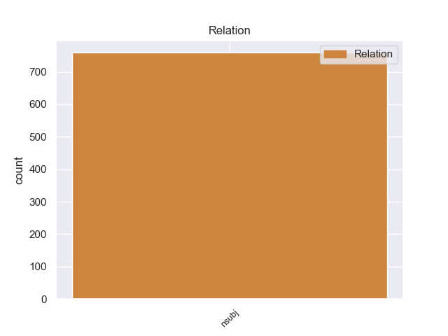
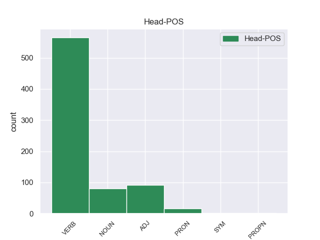
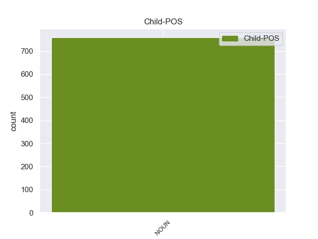

Distribution of features within this leaf



Agreement Rules sorted by frequency.
- When the dependent token is the nominal subject(nsubj) of the head token, and the dependent token is NOUN.
1 El _ _ _ _ 0 _ _ _
2 ministro _ _ _ _ 0 _ _ _
3 británico _ _ _ _ 0 _ _ _
4 de _ _ _ _ 0 _ _ _
5 Defensa _ _ _ _ 0 _ _ _
6 , _ _ _ _ 0 _ _ _
7 Liam _ _ _ _ 0 _ _ _
8 Fox _ _ _ _ 0 _ _ _
9 , _ _ _ _ 0 _ _ _
10 consideró _ _ _ _ 0 _ _ _
11 que _ _ _ _ 0 _ _ _
12 el _ _ _ _ 0 _ _ _
13 avance _ _ _ _ 0 _ _ _
14 rebelde _ _ _ _ 0 _ _ _
15 puede _ _ _ _ 0 _ _ _
16 despejar _ _ _ _ 0 _ _ _
17 el _ _ _ _ 0 _ _ _
18 camino _ _ _ _ 0 _ _ _
19 para _ _ _ _ 0 _ _ _
20 que _ _ _ _ 0 _ _ _
21 los _ _ _ _ 0 _ _ _
22 insurgentes insurgente NOUN _ Number=Plur 24 nsubj _ _
23 se _ _ _ _ 0 _ _ _
24 hagan hacer VERB _ Mood=Sub|Number=Plur|Person=3|Tense=Pres|VerbForm=Fin 0 _ _ _
25 con _ _ _ _ 0 _ _ _
26 el _ _ _ _ 0 _ _ _
27 control _ _ _ _ 0 _ _ _
28 de _ _ _ _ 0 _ _ _
29 los _ _ _ _ 0 _ _ _
30 puntos _ _ _ _ 0 _ _ _
31 de _ _ _ _ 0 _ _ _
32 exportación _ _ _ _ 0 _ _ _
33 de _ _ _ _ 0 _ _ _
34 petróleo _ _ _ _ 0 _ _ _
35 de _ _ _ _ 0 _ _ _
36 Libia _ _ _ _ 0 _ _ _
37 , _ _ _ _ 0 _ _ _
38 una _ _ _ _ 0 _ _ _
39 situación _ _ _ _ 0 _ _ _
40 que _ _ _ _ 0 _ _ _
41 puede _ _ _ _ 0 _ _ _
42 cambiar _ _ _ _ 0 _ _ _
43 la _ _ _ _ 0 _ _ _
44 " _ _ _ _ 0 _ _ _
45 dinámica _ _ _ _ 0 _ _ _
46 " _ _ _ _ 0 _ _ _
47 de _ _ _ _ 0 _ _ _
48 el _ _ _ _ 0 _ _ _
49 conflicto _ _ _ _ 0 _ _ _
50 . _ _ _ _ 0 _ _ _
Disagree Examples:
1 Su _ _ _ _ 0 _ _ _
2 punto punto NOUN _ Gender=Masc|Number=Sing 8 nsubj _ _
3 más _ _ _ _ 0 _ _ _
4 alto _ _ _ _ 0 _ _ _
5 y _ _ _ _ 0 _ _ _
6 característico _ _ _ _ 0 _ _ _
7 lo _ _ _ _ 0 _ _ _
8 encontramos encontrar VERB _ Mood=Ind|Number=Plur|Person=1|Tense=Pres|VerbForm=Fin 0 _ _ _
9 en _ _ _ _ 0 _ _ _
10 el _ _ _ _ 0 _ _ _
11 monte _ _ _ _ 0 _ _ _
12 Kapydzhik _ _ _ _ 0 _ _ _
13 , _ _ _ _ 0 _ _ _
14 que _ _ _ _ 0 _ _ _
15 llega _ _ _ _ 0 _ _ _
16 a _ _ _ _ 0 _ _ _
17 los _ _ _ _ 0 _ _ _
18 2.415 _ _ _ _ 0 _ _ _
19 m _ _ _ _ 0 _ _ _
20 . _ _ _ _ 0 _ _ _
1 Los _ _ _ _ 0 _ _ _
2 mercados mercado NOUN _ Gender=Masc|Number=Plur 16 nsubj _ _
3 escandinavos _ _ _ _ 0 _ _ _
4 , _ _ _ _ 0 _ _ _
5 el _ _ _ _ 0 _ _ _
6 Reino _ _ _ _ 0 _ _ _
7 Unido _ _ _ _ 0 _ _ _
8 , _ _ _ _ 0 _ _ _
9 el _ _ _ _ 0 _ _ _
10 Benelux _ _ _ _ 0 _ _ _
11 y _ _ _ _ 0 _ _ _
12 los _ _ _ _ 0 _ _ _
13 mercados _ _ _ _ 0 _ _ _
14 asiáticos _ _ _ _ 0 _ _ _
15 han _ _ _ _ 0 _ _ _
16 experimentado experimentar VERB _ Gender=Masc|Number=Sing|Tense=Past|VerbForm=Part 0 _ _ _
17 un _ _ _ _ 0 _ _ _
18 crecimiento _ _ _ _ 0 _ _ _
19 particularmente _ _ _ _ 0 _ _ _
20 fuerte _ _ _ _ 0 _ _ _
21 en _ _ _ _ 0 _ _ _
22 reservas _ _ _ _ 0 _ _ _
23 , _ _ _ _ 0 _ _ _
24 como _ _ _ _ 0 _ _ _
25 se _ _ _ _ 0 _ _ _
26 comunicará _ _ _ _ 0 _ _ _
27 hoy _ _ _ _ 0 _ _ _
28 a _ _ _ _ 0 _ _ _
29 la _ _ _ _ 0 _ _ _
30 Junta _ _ _ _ 0 _ _ _
31 General _ _ _ _ 0 _ _ _
32 Anual _ _ _ _ 0 _ _ _
33 Ordinaria _ _ _ _ 0 _ _ _
34 de _ _ _ _ 0 _ _ _
35 Accionistas _ _ _ _ 0 _ _ _
36 . _ _ _ _ 0 _ _ _
1 Las _ _ _ _ 0 _ _ _
2 problemáticas problemático NOUN _ Gender=Fem|Number=Plur 30 nsubj _ _
3 contemporáneas _ _ _ _ 0 _ _ _
4 fundadas _ _ _ _ 0 _ _ _
5 en _ _ _ _ 0 _ _ _
6 la _ _ _ _ 0 _ _ _
7 sostenibilidad _ _ _ _ 0 _ _ _
8 ( _ _ _ _ 0 _ _ _
9 escasez _ _ _ _ 0 _ _ _
10 de _ _ _ _ 0 _ _ _
11 recursos _ _ _ _ 0 _ _ _
12 naturales _ _ _ _ 0 _ _ _
13 como _ _ _ _ 0 _ _ _
14 el _ _ _ _ 0 _ _ _
15 petróleo _ _ _ _ 0 _ _ _
16 , _ _ _ _ 0 _ _ _
17 el _ _ _ _ 0 _ _ _
18 calentamiento _ _ _ _ 0 _ _ _
19 global _ _ _ _ 0 _ _ _
20 y _ _ _ _ 0 _ _ _
21 la _ _ _ _ 0 _ _ _
22 calidad _ _ _ _ 0 _ _ _
23 de _ _ _ _ 0 _ _ _
24 vida _ _ _ _ 0 _ _ _
25 en _ _ _ _ 0 _ _ _
26 las _ _ _ _ 0 _ _ _
27 ciudades _ _ _ _ 0 _ _ _
28 ) _ _ _ _ 0 _ _ _
29 ha _ _ _ _ 0 _ _ _
30 hecho hacer VERB _ Gender=Masc|Number=Sing|Tense=Past|VerbForm=Part 0 _ _ _
31 que _ _ _ _ 0 _ _ _
32 esta _ _ _ _ 0 _ _ _
33 disciplina _ _ _ _ 0 _ _ _
34 cambie _ _ _ _ 0 _ _ _
35 hacia _ _ _ _ 0 _ _ _
36 una _ _ _ _ 0 _ _ _
37 visión _ _ _ _ 0 _ _ _
38 multidisciplinaria _ _ _ _ 0 _ _ _
39 de _ _ _ _ 0 _ _ _
40 el _ _ _ _ 0 _ _ _
41 transporte _ _ _ _ 0 _ _ _
42 , _ _ _ _ 0 _ _ _
43 donde _ _ _ _ 0 _ _ _
44 el _ _ _ _ 0 _ _ _
45 transporte _ _ _ _ 0 _ _ _
46 público _ _ _ _ 0 _ _ _
47 y _ _ _ _ 0 _ _ _
48 el _ _ _ _ 0 _ _ _
49 transporte _ _ _ _ 0 _ _ _
50 en _ _ _ _ 0 _ _ _
51 modos _ _ _ _ 0 _ _ _
52 activos _ _ _ _ 0 _ _ _
53 ( _ _ _ _ 0 _ _ _
54 bicicletas _ _ _ _ 0 _ _ _
55 y _ _ _ _ 0 _ _ _
56 peatones _ _ _ _ 0 _ _ _
57 ) _ _ _ _ 0 _ _ _
58 ha _ _ _ _ 0 _ _ _
59 cobrado _ _ _ _ 0 _ _ _
60 una _ _ _ _ 0 _ _ _
61 inmensa _ _ _ _ 0 _ _ _
62 importancia _ _ _ _ 0 _ _ _
63 . _ _ _ _ 0 _ _ _
1 El _ _ _ _ 0 _ _ _
2 resto resto NOUN _ Gender=Masc|Number=Sing 7 nsubj _ SpaceAfter=No
3 , _ _ _ _ 0 _ _ _
4 con _ _ _ _ 0 _ _ _
5 la _ _ _ _ 0 _ _ _
6 capitana _ _ _ _ 0 _ _ _
7 arribaron arribar VERB _ Mood=Ind|Number=Plur|Person=3|Tense=Past|VerbForm=Fin 0 _ _ _
8 a _ _ _ _ 0 _ _ _
9 la _ _ _ _ 0 _ _ _
10 bahía _ _ _ _ 0 _ _ _
11 de _ _ _ _ 0 _ _ _
12 Cádiz _ _ _ _ 0 _ _ _
13 el _ _ _ _ 0 _ _ _
14 día _ _ _ _ 0 _ _ _
15 8 _ _ _ _ 0 _ _ _
16 de _ _ _ _ 0 _ _ _
17 febrero _ _ _ _ 0 _ _ _
18 . _ _ _ _ 0 _ _ _
1 Si _ _ _ _ 0 _ _ _
2 se _ _ _ _ 0 _ _ _
3 observa _ _ _ _ 0 _ _ _
4 dicho _ _ _ _ 0 _ _ _
5 mapa _ _ _ _ 0 _ _ _
6 se _ _ _ _ 0 _ _ _
7 puede _ _ _ _ 0 _ _ _
8 comprobar _ _ _ _ 0 _ _ _
9 que _ _ _ _ 0 _ _ _
10 el _ _ _ _ 0 _ _ _
11 tercio _ _ _ _ 0 _ _ _
12 sur _ _ _ _ 0 _ _ _
13 correspondía _ _ _ _ 0 _ _ _
14 a _ _ _ _ 0 _ _ _
15 Totonicapán _ _ _ _ 0 _ _ _
16 , _ _ _ _ 0 _ _ _
17 y _ _ _ _ 0 _ _ _
18 los _ _ _ _ 0 _ _ _
19 restantes _ _ _ _ 0 _ _ _
20 dos _ _ _ _ 0 _ _ _
21 tercios tercio NOUN _ Gender=Masc|Number=Plur 26 nsubj _ _
22 en _ _ _ _ 0 _ _ _
23 el _ _ _ _ 0 _ _ _
24 norte _ _ _ _ 0 _ _ _
25 eran _ _ _ _ 0 _ _ _
26 lo él PRON _ Case=Acc|Gender=Masc|Number=Sing|Person=3|PrepCase=Npr|PronType=Prs 0 _ _ _
27 que _ _ _ _ 0 _ _ _
28 entonces _ _ _ _ 0 _ _ _
29 se _ _ _ _ 0 _ _ _
30 conocía _ _ _ _ 0 _ _ _
31 como _ _ _ _ 0 _ _ _
32 Huehuetenango _ _ _ _ 0 _ _ _
33 , _ _ _ _ 0 _ _ _
34 un _ _ _ _ 0 _ _ _
35 extenso _ _ _ _ 0 _ _ _
36 territorio _ _ _ _ 0 _ _ _
37 atravesado _ _ _ _ 0 _ _ _
38 por _ _ _ _ 0 _ _ _
39 la _ _ _ _ 0 _ _ _
40 Sierra _ _ _ _ 0 _ _ _
41 de _ _ _ _ 0 _ _ _
42 los _ _ _ _ 0 _ _ _
43 Cuchumatanes _ _ _ _ 0 _ _ _
44 desde _ _ _ _ 0 _ _ _
45 Motozintla _ _ _ _ 0 _ _ _
46 ( _ _ _ _ 0 _ _ _
47 San _ _ _ _ 0 _ _ _
48 Francisco _ _ _ _ 0 _ _ _
49 Motozintla _ _ _ _ 0 _ _ _
50 ) _ _ _ _ 0 _ _ _
51 en _ _ _ _ 0 _ _ _
52 el _ _ _ _ 0 _ _ _
53 oeste _ _ _ _ 0 _ _ _
54 hasta _ _ _ _ 0 _ _ _
55 Uzpantlán _ _ _ _ 0 _ _ _
56 ( _ _ _ _ 0 _ _ _
57 Uspantán _ _ _ _ 0 _ _ _
58 ) _ _ _ _ 0 _ _ _
59 a _ _ _ _ 0 _ _ _
60 el _ _ _ _ 0 _ _ _
61 este _ _ _ _ 0 _ _ _
62 , _ _ _ _ 0 _ _ _
63 y _ _ _ _ 0 _ _ _
64 desde _ _ _ _ 0 _ _ _
65 Sacapulas _ _ _ _ 0 _ _ _
66 a _ _ _ _ 0 _ _ _
67 el _ _ _ _ 0 _ _ _
68 sur _ _ _ _ 0 _ _ _
69 hasta _ _ _ _ 0 _ _ _
70 Ystatlán _ _ _ _ 0 _ _ _
71 ( _ _ _ _ 0 _ _ _
72 San _ _ _ _ 0 _ _ _
73 Mateo _ _ _ _ 0 _ _ _
74 Ixtatán _ _ _ _ 0 _ _ _
75 ) _ _ _ _ 0 _ _ _
76 a _ _ _ _ 0 _ _ _
77 el _ _ _ _ 0 _ _ _
78 norte _ _ _ _ 0 _ _ _
79 . _ _ _ _ 0 _ _ _